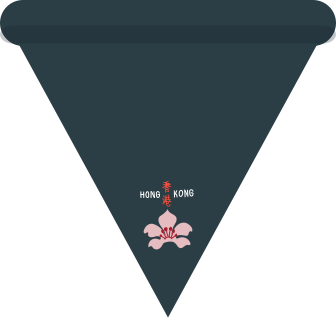

An archive of
Scout neckerchiefs,
preserved.
A quiet, growing collection of Scout neckerchiefs from troops, regions, and jamborees, catalogued and presented one object at a time.

What this archive holds
The Scout Necker Archive is a digital collection dedicated to the neckerchief — one of Scouting's most enduring pieces of dress. Each entry is photographed and catalogued in isolation, in the manner of an object study, so that its colour, fold, and construction can be seen clearly and without distraction.
The collection spans troop scarves, regional issues, jamboree editions, and pieces marking leadership and anniversary occasions. Objects are added individually as they are catalogued, each recorded with a name and an accession number, in keeping with archival practice.
Help the archive grow
If you collect Scout neckerchiefs, you can send photos and details to help us add new objects to the archive. Every contribution helps the collection grow.